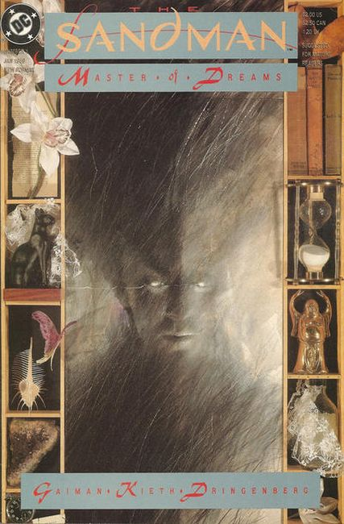

Script by Neil Gaiman
Cover by Dave McKean
Illustration by Sam Kieth and Mike Dringenberg
Sleep of the Just [Master of Dreams Part 1]
Roderick Burgess, seeking to trap Death, snares her brother Dream instead. After many years of captivity, Morpheus is released and takes his revenge. Wesley Dodds (Golden Age Sandman) cameo appearance.